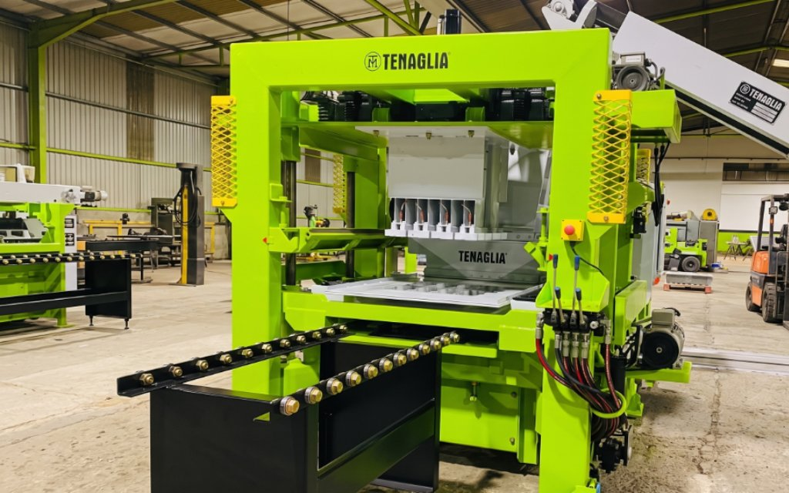
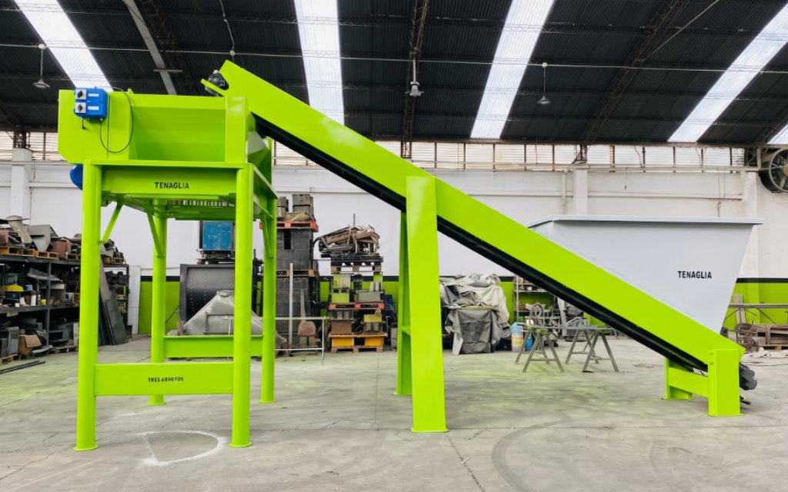

Innovación Nacional
Desarrollamos soluciones mecánicas y optimizaciones automatizadas que transforman los procesos productivos tradicionales.

Desarrollamos soluciones mecánicas y optimizaciones automatizadas que transforman los procesos productivos tradicionales.
Equipos robustos de gran escala preparados para exigencias industriales extremas y jornadas continuas de alta producción.
Somos fabricantes directos. Brindamos asesoramiento técnico personalizado, repuestos e instalación en todo el territorio nacional.

Fabricación de adoquineras hidráulicas automatizadas y máquinas de pavimento articulado de gran escala con alta producción diaria.
Ver maquinarias viales
Cosechadoras de turba de gran capacidad de aspirado diseñadas para optimizar y triplicar los tiempos de recolección en el campo.
Ver línea agrícola
Diseño y construcción de sistemas de tolvas, cintas transportadoras y mezcladoras automatizadas a la medida de cada industria.
Ver proyectos a medida